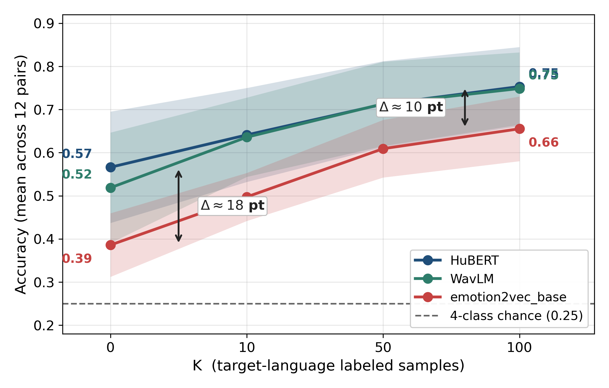

The finding in short. Specialised emotion AI models don't keep their edge once the comparison is made fair. With speaker identity and the evaluation procedure controlled, general-purpose speech models trained with no emotion labels at all matched or beat the specialist, which makes them the safer choice for a low-resource language like Albanian.
Why the question matters
Almost nobody trains an emotion recogniser from scratch any more. You take a large speech model that has already listened to thousands of hours of audio, keep it fixed, and train a small classifier on top. The large model does the hard listening, so for a language with little data, choosing it is the decision that matters most.
A 2024 paper reported that a model pretrained on emotional speech, called emotion2vec, beat general-purpose models by 25 to 45 percentage points in several non-English languages. If true, that would settle the choice for Albanian.
The three models
- HuBERT and WavLM are general-purpose speech models from Meta and Microsoft, trained on 960 hours of English audiobooks with no emotion labels at all.
- emotion2vec is the specialist, trained on 262 hours of emotional speech.
Each turns a clip into a list of 768 numbers. The study put the same small classifier on top of each and asked it to pick one of four emotions: angry, happy, neutral or sad.
The fairness rule
The speakers in the test set never appear in training. Otherwise a classifier can partly recognise familiar voices rather than emotions, which inflates the scores. The original comparison used random splits that let this happen.
What was found
- Within each language. Across five corpora in German, English, Mandarin and Bangla, emotion2vec came last every time. The general models reached 78% to 93% accuracy; on Bangla the three were effectively tied.
- On the original paper's own procedure. emotion2vec was again the weakest. The published advantage traces to general-purpose models that were configured far below what they can do.
- On Thai. A version of emotion2vec further tuned on emotion data did worse on Thai, a language outside that data, than both general models and its own untuned version.
- Across languages. Trained in one language and tested in another, emotion2vec trailed by 13 to 18 percentage points, and still by about 10 after adding 100 labelled examples from the target language.

The chart has a second lesson for Albanian. Just 100 labelled examples close about two-thirds of the gap between zero-shot transfer and training in the language itself. A small, validated corpus like AlbEmo goes a long way.
Ruling out a shortcut
Did the general models win only by recognising who was speaking? The study erased speaker identity from the numbers and re-ran the test. The ranking held, and if anything the test favoured emotion2vec, which had less speaker information to lose.
Read more
Paper. Alex Thomo, "Re-Examining emotion2vec's Cross-Lingual Advantage: A Confound-Controlled Comparison of Self-Supervised Speech Models," Transactions on Machine Learning Research, 2026. Open access on OpenReview at openreview.net/forum?id=RBUnKFHagf.
Code. github.com/thomouvic/ser-cross-ling-pub (MIT licence).
Data. The extracted model outputs for the public corpora are archived on OSF at doi.org/10.17605/OSF.IO/8VCH9.